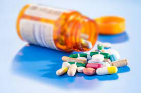

História dos remédios
postado em 9 de agosto 2021 No século XVI, o estudo dos remédios ganhou impulso notável, com a pesquisa sistemática dos princípios ativos das plantas e dos minerais capazes de curar doenças. Com o tempo, foi implantada no mundo a indústria farmacêutica, e, com ela, novos medicamentos são criados e estudos realizados em velocidade espantosa.
Fonte crfmg.orgO que é remédio natural?
postado em 11 de agosto 2021
Remédio natural ou remédio caseiro, é toda substância retirada da natureza e que não passa por uma indústria farmacêutica. Assim como os remédios tradicionais, ele é utilizado para a prevenção, tratamento ou cura de doenças. Com o avanço da tecnologia, o remédio natural vem sendo utilizado com menor frequência pelas pessoas, principalmente na cidade grande. Esta mudança também se dá pela acessibilidade aos medicamentos, seja ele de referência ou genérico. Uma das diferenças do remédio natural para os tradicionais, também é o seu nível de concentração. Por não passar por um tratamento na indústria farmacêutica, o remédio natural costuma conter vários tipos de substâncias. Além disso, concentra-os em uma quantidade variada, não sendo possível dosar precisamente na hora de ingerir.
Fonte drogariasantoremedioOs riscos da automedicação
postado em 12 de agosto 2021
A descoberta de medicamentos é um importante processo do sistema de saúde mundial, com utilidade no tratamento e na cura de enfermidades. No entanto, o uso de remédios para problemas de saúde é visto, muitas vezes, como uma solução imediata para aliviar sintomas como dores e mal-estar. Os efeitos das substâncias presentes nos remédios têm sido subestimados e a automedicação é, hoje, uma prática comum entre os brasileiros, podendo causar graves danos ao organismo.
Fonte pfizer.com.brEsportes x Remédios
postado em 15 de fevereiro 2001
A médica Silene Okuma, especialista em educação física para idosos, explica que os exercícios ativam os sistemas cardiovascular, muscular, articular e nervosos central e periférico, ajudando a eliminar ou diminuir o uso de remédios.
Fonte folha.uol.com.br